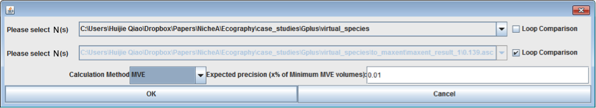

Determine the appropriate threshold value by calculating the niche overlap and the distance of two niche centroids.
Note:
The data used in this case study can be downloaded via this link.
From Fig.2 in Case 1, we can see that ‘Equal training sensitivity and specificity’ (blue ellipsoid) is closer to the original N (white) intuitively. We can also calculate the similarities quantitatively in NicheA.
In the ‘Toolbox’ menu, ‘Quantifying niche similarity’ submenu, we can find the function to quantify niche similarity by calculating the overlap of two ellipsoids (Fig. 1). Because we want to calculate the overlap of the original N with all the other results, we select ‘virtual_species’ in the first drop-down list, and check ‘Loop Comparison’ on the right of the next drop-down list. Because we want to calculate the overlap of ellipsoids, the ‘Calculation Method’ is set to ‘MVE’.

Then we can get the overlap results (Table 1).
| VS1 | VS1 MVE Volume | VS2 (Threshold method) | VS2 MVE Volume | Overlap | Overlap/VS1 | Overlap/VS2 |
|---|---|---|---|---|---|---|
| origin | 39.290 | Balance training omission, predicted area and threshold value | 144.882 | 39.290 | 1 | 0.271 |
| origin | 39.290 | Maximum training sensitivity plus specificity | 90.619 | 39.290 | 1 | 0.434 |
| origin | 39.290 | 10 percentile of training presence | 74.425 | 39.176 | 0.997 | 0.5264 |
| origin | 39.290 | Equal training sensitivity and specificity | 57.021 | 37.697 | 0.959 | 0.6614 |
So, if we require the thresholded result to contain at least 95% information of the original N with a highest threshold value, the 'Equal training sensitivity and specificity' method is likely to be the ‘best’ method.
Note:
The sentence above is only an example, but not a standard to measure the 'best' threshold method. You must pick your own method from your specific scientific question.
We can also choose the ‘best’ threshold value by calculating the distance to the niche centroid. Click ‘Toolbox’–‘Show N attributes’, where the coordinates of the ellipsoid will be available (Fig. 2).
After reading the coordinates and calculating the Euclidean distances from the two centers, we can get Table 2 and 3. In this manual, we won’t interpret the results in detail, because each case is unique, and should be interpreted comprehensively.
| Ellipsoid label (Threshold method) | x | y | z |
|---|---|---|---|
| Original | 2.471252 | -1.15762 | 0.37744 |
| Balance training omission, predicted area and threshold value | 2.522364 | -1.08732 | 0.304633 |
| Maximum training sensitivity plus specificity | 2.547513 | -1.20877 | 0.467751 |
| 10 percentile of training presence | 2.548166 | -1.30262 | 0.492427 |
| Equal training sensitivity and specificity | 2.64899 | -1.40261 | 0.645102 |
| Balance training omission, predicted area and threshold value | Maximum training sensitivity plus specificity | 10 percentile of training presence | Equal training sensitivity and specificity | |
|---|---|---|---|---|
| Original | 0.113383 | 0.128792 | 0.200403342 | 0.404044427 |